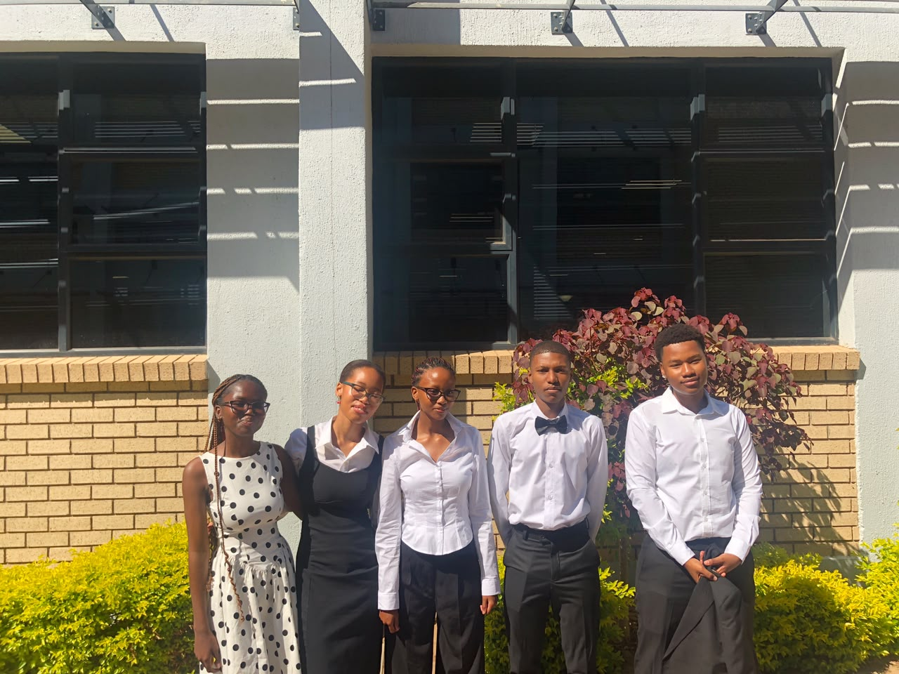
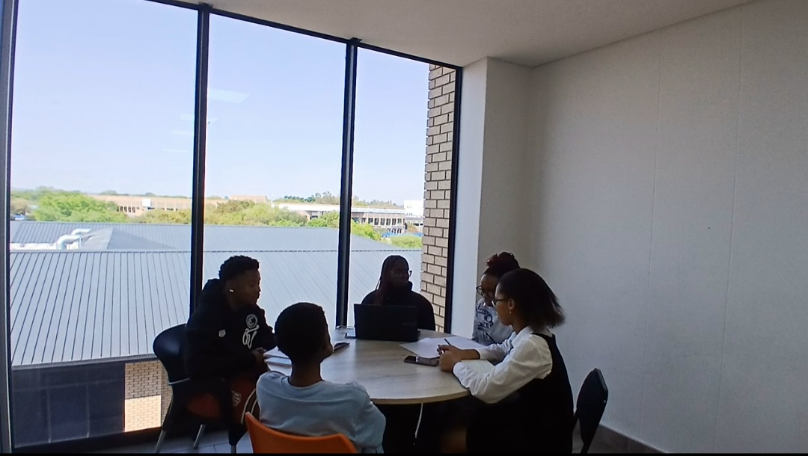
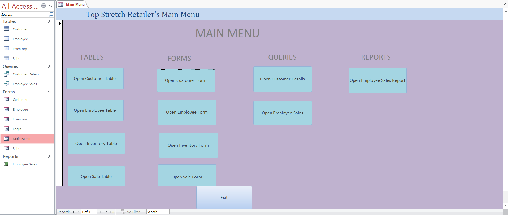
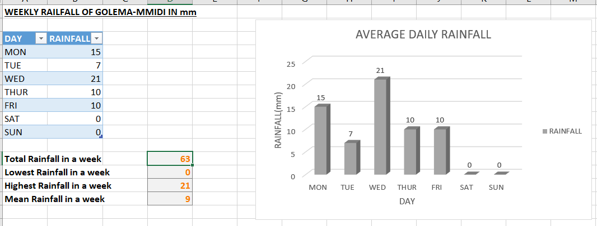
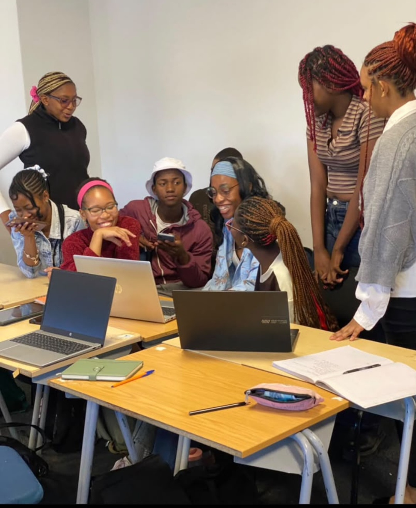

01 · About Me
Hello and welcome! My name is Atang Cetrida Kerekang, and I am a BSc Business Intelligence and Data Analytics student at the Botswana School of Business Sciences (BAC).
I am a motivated and hardworking student with interests in data, technology, business, debate, poetry, crocheting and astronomy. I enjoy learning, exploring ideas and developing skills that can help me contribute positively to an organisation.
My long-term goal is to build a career where I can use data to support better decision-making, improve organisational performance and contribute to innovation across industries.
About Me
My name is Atang. I am a Business Intelligence and Data Analytics student at BAC. I am passionate about learning, developing new skills and exploring opportunities in technology and data.
02 · Curriculum Vitae
A summary of my education, experience, skills and interests. Personal phone number and email have been left off this public page for privacy.
Atang Cetrida Kerekang
Professional profile
A motivated, hardworking person with communication, critical-thinking and teamwork skills. Eager to gain practical experience while contributing positively to an organisation and continuing to develop professionally. My long-term goal is to use data to support better decision-making, improve organisational performance and contribute to innovation across industries.
Areas of expertise
Academic qualifications
Botswana School of Business Sciences
Bachelor of Science in Business Intelligence & Data Analytics (2026–2030)
Current modules: Communication and Study Skills; Fundamentals of Business Finance; Statistical Foundations for Data Analysis; Computer Technology.
Seepapitso Senior Secondary School
Botswana General Certificate of Secondary Education (2024–2025)
Noteworthy accomplishments
- Held a leadership role as House Captain at senior school.
- Was an active participant in Seepapitso Debate Club.
Work experience
Intern – Lillie Willie Pre-School
January 2026 – June 2026
- Assisted with administrative tasks, daily planning and organisational activities.
- Observed the management and entrepreneurship skills involved in running a business.
- Gained experience in customer service, staff coordination and meetings.
- Obtained practical exposure to business operations.
Hobbies and interests
Attending hackathons · Debate · Poetry · Crocheting · Astronomy
03 · Reflective Blog Post
A reflection on my transition from secondary education to tertiary learning.
Transitioning from secondary education to tertiary education introduced me to a different learning experience, both academically and personally. One of the significant challenges of my first semester was adjusting to the academic demands of tertiary education. Unlike secondary education, where one could simply memorise information, I found myself having to consistently practise and get a deeper understanding of concepts, which was fairly new to me. It also did not help that it takes time for me to grasp information, which affected my time-management skills, and I often procrastinated instead of doing schoolwork.
This led to many sleepless nights trying to catch up on modules such as Statistical Foundations for Data Analytics and Fundamentals of Business Finance, which require deep understanding. Not to mention Computer Technology, which required independent exploration and practical application.
This experience made me recognise the importance of developing good study habits. I began to understand that relying exclusively on classroom explanations was insufficient and that independent studying was essential. This included revisiting lecture notes right after the lecture, doing active recall (practice questions, blurting and the Feynman technique) instead of passive learning, and seeking clarification when concepts were difficult. I also learned to prioritise my responsibilities, plan ahead and avoid unnecessary procrastination, which improved my time management.
Beyond academics, my experience in tertiary education has contributed towards my personal development. I have become more open to learning from my mistakes instead of trying to erase them and recognised that encountering different concepts does not indicate an inability to understand them or failure, but rather an opportunity to improve through practice and consistent effort. This has encouraged me to approach my academic challenges with a more positive and growth-oriented mindset.
As I continue my academic journey, I intend to strengthen my study routines, improve my time management and become more confident in applying theoretical knowledge to practical situations.
04 · Reflective Blog Post Experience Group Work Experience
Reflecting on my group's development through Tuckman's five stages.
Forming stage
During our first tutorial class for Communication and Study Skills, a random selection of around six of my course mates were placed in front of us and instructed to pick five or six people to form a complete group. I was chosen by one of my course mates, Bothe Mogano, and along with me he picked Katso Modisenyane, Ruth Monamati and Bame Oageng. We were then given the task of completing group work. Upon completing the assignment, we noticed that Bothe and Katso were quite fond of each other, but for the rest of us, it was quite awkward because we were not familiar with each other. After the group work, Bothe and Katso left, and Ruth, Bame and I remained. We took it as an opportunity to get to know each other and started conversing about our backgrounds, interests and hobbies. As we progressed with other group tasks, we became more acquainted with each other's working styles, ethics, expectations and communication skills.
Storming stage
As we progressed with other group tasks, we became more acquainted with each other's working styles, ethics, expectations and communication skills. This also meant that we encountered differences in opinions, communication difficulties and the coordination of individual responsibilities. Although we had a common goal of completing the group work, I found understanding our group leader, Bothe Mogano, quite complicated. We often found ourselves misunderstanding each other, which could lead to friction and tension in the group because members would sometimes have to intervene and try to resolve the issue. We also encountered communication difficulties, especially when arranging physical meet-ups to discuss the work. There was often confusion about when and where we were meeting.
Norming stage
As we continued working together, we gradually developed a better understanding of how to cooperate. We began organising our responsibilities and establishing expectations for completing the work. Communication improved, and members became more comfortable sharing their opinions and asking questions. This stage helped us develop trust and understand the importance of respecting each member's contribution.
Performing stage
At this point, members worked on their assigned responsibilities and contributed towards achieving a common goal. Since the group work contributed to everyone's final mark, no one was lagging behind. We split each task according to everyone's strengths. I was given the task of creating and organising the slides because of my technical skills. Bothe was given the role of chairperson; he arranged meetings and ensured everyone did their work because he was more outspoken. Bame was given the role of secretary, helping Bothe plan meetings, creating the agenda and writing meeting minutes because she was a great observer. Katso was the researcher, making extensive research on the topics we were given and reporting back to us because he was organised. Ruth was the presenter, responsible for introducing the topic and communicating most of the information to the audience.
Adjourning stage
Our group managed to complete and submit the group work in due time because we worked together and cooperated. Looking back, I learned that disagreements must be approached constructively and that members need to listen to one another, communicate openly and remain focused on the group's overall goal.
Our Group Work Experience
These photographs capture moments from our group work experience, highlighting collaboration, communication and teamwork throughout our activities.

Our Group Collaboration

Our Group Work Experience
My Skills & Projects
Throughout my Business Intelligence and Data Analytics studies, I have developed practical technical skills through coursework, collaborative projects and technology-based activities.
Featured Technical Projects

Database Management
Microsoft Access – Top Stretch Retailers
Developed a database management system for Top Stretch Retailers to organise customer, employee, inventory and sales information.
Skills demonstrated:- Database table creation
- Forms and data entry
- Queries and information retrieval
- Report generation
- Interactive database navigation

Data Analysis
Microsoft Excel – Rainfall Analysis
Used Microsoft Excel to organise and analyse weekly rainfall data for Golema-Mmidi. The project involved calculating statistical measurements and presenting findings visually.
Skills demonstrated:- SUM, MIN, MAX and AVERAGE functions
- Data organisation
- Statistical calculations
- Column chart creation
- Data interpretation

Hackathon Project
Scam or Slay
Participated in a hackathon involving the development of an interactive digital awareness project that helps users identify fraudulent messages and distinguish scams from safe messages.
Skills demonstrated:- Teamwork and collaboration
- Problem-solving
- Creative thinking
- Digital literacy
- Communication
06 · Application Letter
Atang Cetrida Kerekang
Gaborone, Botswana
10 November 2026
The Human Resource Manager
Botswana School of Business Sciences
Gaborone, Botswana
RE: APPLICATION FOR INDUSTRIAL ATTACHMENT
Dear Hiring Manager,
I am writing to express my interest in an industrial attachment opportunity at Botswana School of Business Sciences. I am currently pursuing a Bachelor of Science in Business Intelligence and Data Analytics at this very same institution, where I am developing academic knowledge and practical skills in business, information technology and data analysis.
Through my academic studies, I have gained an understanding of fundamental concepts in Statistics, Business Finance, Computer Technology and Communication Skills through classes. In addition to my academic knowledge, I am developing skills in Microsoft Excel, Database Management, information processing and professional communication. I consider myself a responsible, adaptable and motivated individual who is willing to learn, collaborate with others and take on new challenges.
I am particularly interested in undertaking my attachment at Botswana School of Business Sciences because it would allow me to gain exposure to the operational and technological environment of an established higher education institution.
I would appreciate your consideration of my application and would look forward to your response. Thank you for your time and consideration.
Yours faithfully,
Atang Cetrida Kerekang
07 · Professional Email Template
To: Human Resource Manager
Subject: Application for Industrial Attachment
Dear Hiring Manager,
I hope this email finds you well.
I am writing to submit my application for an industrial attachment opportunity at your organisation. I am currently pursuing a Bachelor of Science in Business Intelligence and Data Analytics at the Botswana School of Business Sciences.
Please find my CV and application letter attached for your consideration. I would appreciate the opportunity to gain practical experience and further develop my skills in a professional environment.
Thank you for your time and consideration. I look forward to your response.
Kind regards,
Atang Cetrida Kerekang
Study Tips & Resources
University life requires more than attending lectures and completing assignments. It requires discipline, effective time management, independent learning and the ability to use appropriate academic resources. As a first-year student at BAC, I have learned the importance of developing good study habits that support academic performance and personal growth.
This section shares practical study tips and learning resources that can help students become more organised, productive and confident in their academic journey.
1. Manage your time effectively
Create a weekly study timetable. Allocate enough time for lectures, assignments, revision and personal activities. Avoid waiting until the last minute to complete academic tasks.
2. Take organised lecture notes
Record important concepts, definitions and examples during lectures. Review and organise your notes after class to improve understanding and make revision easier.
3. Practise active learning
Do not rely entirely on reading notes. Test yourself using practice questions, explain concepts in your own words and attempt exercises without looking at the answers.
4. Participate in group discussions
Work with classmates to discuss difficult topics, exchange ideas and explain concepts to one another. Ensure group discussions remain focused and productive.
5. Use academic resources
Supplement lecture notes with textbooks, academic journals and reliable educational websites. Always evaluate the credibility of information before using it in assignments.
6. Ask questions and seek assistance
Do not ignore concepts you find difficult. Consult lecturers, tutors or classmates when you need clarification. Asking questions is an important part of independent learning.
Recommended learning resources
Google Scholar
Helps students find academic articles, research papers and scholarly publications for assignments and research.
Visit Google ScholarEducational YouTube channels
Video lessons can explain difficult concepts through demonstrations and visual examples. Examples include Cognito and The Organic Chemistry Tutor.
Visit YouTube